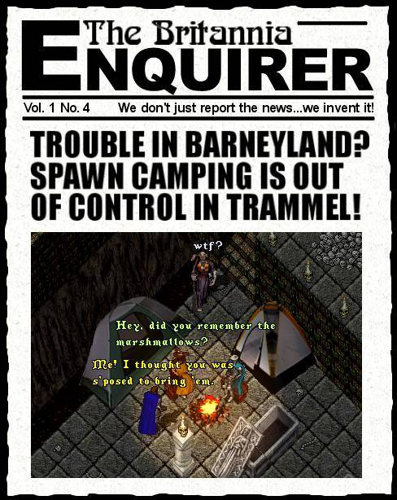

Insider on the News: Spawn Camping Defined - this is the greedy, rather lame act of getting a group of several people and sitting hour after hour, day after day, in one of the prime dungeon spawn points and immediately attacking everything that spawns, making it impossible for anyone else arriving on the scene to get enough hits in on a monster to share in the loot. This occurs on Trammel because there is no way to take out the offenders, owing to the no player-killing rules.